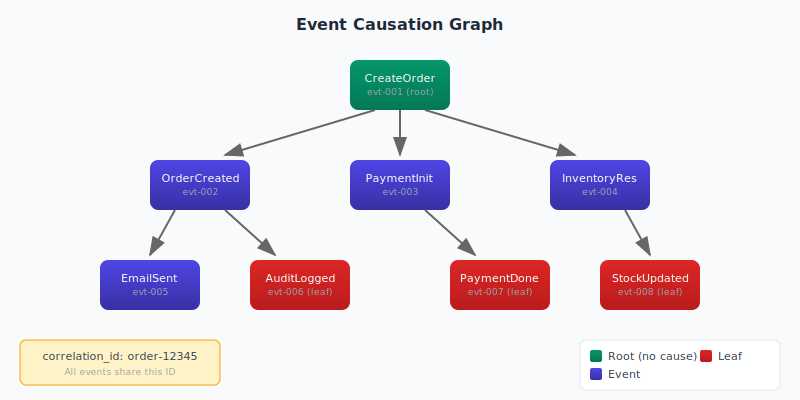
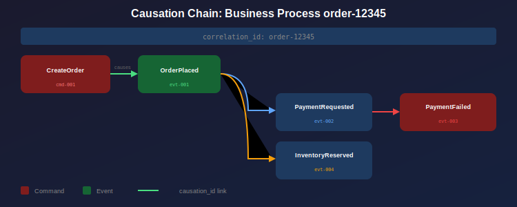

Causation Tracking
View SourceThis guide explains how to track the lineage of events through your system, enabling debugging, auditing, and visualization of event relationships.

Prerequisites
Before reading this guide, you should understand:
- Event sourcing concepts (Event Sourcing Guide)
- How events propagate through process managers and sagas
- The difference between commands (requests) and events (facts)
The Problem: Understanding "Why?"
In event-driven systems, a single user action can trigger a cascade of events across multiple streams:
User clicks "Place Order"
→ OrderPlaced event
→ PaymentRequested event
→ PaymentFailed event
→ OrderCancelled eventWhen debugging, you need to answer:
- "What caused this PaymentFailed event?"
- "What effects did the OrderPlaced event have?"
- "Show me all events related to this order"
Without causation tracking, you're searching through logs hoping to find connections.
The Solution: Causation and Correlation IDs
Every event carries metadata that links it to its origin:
| Field | Purpose | Example |
|---|---|---|
causation_id | The ID of the event/command that directly caused this event | "evt-001" |
correlation_id | A shared ID grouping all events in a business process | "order-12345" |

Where Does This Code Run?
| Operation | Location | Module |
|---|---|---|
| Set causation/correlation IDs | Your Application | Your command handlers |
| Append events with metadata | Your Application | esdb_gater_api |
| Query causation relationships | Your Application | esdb_gater_api |
| Build causation graph | reckon-db Server | reckon_db_causation |
| Generate DOT visualization | reckon-db Server | esdb_graph_nif |
API Reference
Setting Causation Metadata
%%--------------------------------------------------------------------
%% This code runs in: YOUR APPLICATION (command handler)
%% Purpose: Create events with proper causation chain
%%--------------------------------------------------------------------
-module(order_handler).
handle_command(Command, State) ->
CommandId = maps:get(id, Command),
%% Correlation ID groups all events in this business process
CorrelationId = maps:get(correlation_id, Command, CommandId),
Events = [
#{
event_type => <<"OrderCreated">>,
data => #{order_id => <<"order-123">>, items => [...]},
metadata => #{
causation_id => CommandId, %% This command caused this event
correlation_id => CorrelationId %% Part of this business process
}
}
],
{ok, _} = esdb_gater_api:append_events(my_store, StreamId, Events).Get Effects (What Did This Event Cause?)
%%--------------------------------------------------------------------
%% This code runs in: YOUR APPLICATION
%% Purpose: Find all events caused by a specific event
%%--------------------------------------------------------------------
%% What events did OrderCreated cause?
{ok, Effects} = esdb_gater_api:get_effects(my_store, <<"evt-001">>).
%% Returns events where causation_id = "evt-001"
[
#{event_type => <<"PaymentInitiated">>, id => <<"evt-002">>, ...},
#{event_type => <<"InventoryReserved">>, id => <<"evt-003">>, ...}
]Get Cause (What Caused This Event?)
%%--------------------------------------------------------------------
%% This code runs in: YOUR APPLICATION
%% Purpose: Find the parent event in the causation chain
%%--------------------------------------------------------------------
%% What caused PaymentInitiated?
{ok, Cause} = esdb_gater_api:get_cause(my_store, <<"evt-002">>).
%% Returns the parent event
#{event_type => <<"OrderCreated">>, id => <<"evt-001">>, ...}Get Causation Chain (Root to Current)
%%--------------------------------------------------------------------
%% This code runs in: YOUR APPLICATION
%% Purpose: Trace the full causation path back to the root cause
%%--------------------------------------------------------------------
%% Trace PaymentFailed back to its origin
{ok, Chain} = esdb_gater_api:get_causation_chain(my_store, <<"evt-007">>).
%% Returns events from root to this event
[
#{event_type => <<"CreateOrderCommand">>, id => <<"cmd-001">>, ...}, %% Root
#{event_type => <<"OrderCreated">>, id => <<"evt-001">>, ...},
#{event_type => <<"PaymentInitiated">>, id => <<"evt-002">>, ...},
#{event_type => <<"PaymentFailed">>, id => <<"evt-007">>, ...} %% Current
]Get Correlated Events (Entire Business Process)
%%--------------------------------------------------------------------
%% This code runs in: YOUR APPLICATION
%% Purpose: Find all events sharing the same correlation ID
%%--------------------------------------------------------------------
%% Get all events for order processing
{ok, Events} = esdb_gater_api:get_correlated(my_store, <<"order-12345">>).
%% Returns all events with correlation_id = "order-12345"Build Causation Graph (For Visualization)
%%--------------------------------------------------------------------
%% This code runs in: YOUR APPLICATION
%% Purpose: Build a graph structure for visualization tools
%%--------------------------------------------------------------------
{ok, Graph} = esdb_gater_api:build_causation_graph(my_store, <<"evt-001">>).
%% Returns a graph structure
#{
nodes => [
#{id => <<"evt-001">>, type => <<"OrderCreated">>, ...},
#{id => <<"evt-002">>, type => <<"PaymentInitiated">>, ...},
...
],
edges => [
#{from => <<"evt-001">>, to => <<"evt-002">>},
#{from => <<"evt-001">>, to => <<"evt-003">>},
...
],
roots => [<<"evt-001">>],
leaves => [<<"evt-005">>, <<"evt-006">>, <<"evt-007">>]
}Use Cases
1. Debugging Failed Processes
When a payment fails, trace back to understand the full context:
%%--------------------------------------------------------------------
%% This code runs in: YOUR APPLICATION
%% Purpose: Debug a failure by tracing its causation chain
%%--------------------------------------------------------------------
-module(incident_investigator).
debug_failure(StoreId, FailedEventId) ->
%% Get the causation chain (how we got here)
{ok, Chain} = esdb_gater_api:get_causation_chain(StoreId, FailedEventId),
%% Get all related events (what else happened)
{ok, FailedEvent} = get_event(StoreId, FailedEventId),
CorrelationId = maps:get(correlation_id, maps:get(metadata, FailedEvent)),
{ok, AllEvents} = esdb_gater_api:get_correlated(StoreId, CorrelationId),
#{
causation_chain => Chain, %% Direct ancestors
all_related_events => AllEvents, %% Everything in this process
root_cause => hd(Chain) %% Where it all started
}.2. Process Manager/Saga Tracking
Track saga execution across multiple aggregates:
%%--------------------------------------------------------------------
%% This code runs in: YOUR APPLICATION (process manager)
%% Purpose: Create events with saga correlation
%%--------------------------------------------------------------------
-module(order_saga).
start_saga(OrderId) ->
%% Order ID becomes the correlation ID for the entire saga
CorrelationId = OrderId,
SagaStartCommand = #{
id => generate_id(),
correlation_id => CorrelationId,
order_id => OrderId
},
handle_command(SagaStartCommand).
%% Later: check saga progress
get_saga_status(OrderId) ->
{ok, Events} = esdb_gater_api:get_correlated(my_store, OrderId),
analyze_saga_state(Events).3. Visualization with Graphviz
Export causation graphs for visual analysis:
%%--------------------------------------------------------------------
%% This code runs in: YOUR APPLICATION
%% Purpose: Generate a visual diagram of event relationships
%%--------------------------------------------------------------------
visualize_causation(StoreId, EventId) ->
{ok, Graph} = esdb_gater_api:build_causation_graph(StoreId, EventId),
%% Convert to DOT format (using esdb_graph_nif on server)
DOT = esdb_graph_nif:to_dot(Graph),
%% Write to file and render with Graphviz
file:write_file("causation.dot", DOT),
os:cmd("dot -Tpng causation.dot -o causation.png").Event Metadata Schema
Recommended metadata structure for all events:
%%--------------------------------------------------------------------
%% This code runs in: YOUR APPLICATION
%% Purpose: Standard metadata structure for causation tracking
%%--------------------------------------------------------------------
create_event_metadata(CausingId, CorrelationId, ActorId) ->
#{
%% Causation tracking (required for lineage)
causation_id => CausingId, %% ID of the causing event/command
correlation_id => CorrelationId, %% Business process ID
%% Additional context (optional but recommended)
actor_id => ActorId, %% Who/what triggered this
timestamp => erlang:system_time(microsecond), %% When it happened
source => atom_to_binary(node()) %% Which node/service
}.Common Pitfalls
1. Missing Causation in Event Handlers
%% BAD: Event handler creates new events without causation link
handle_event(OrderCreated, State) ->
NewEvent = #{event_type => <<"PaymentRequested">>, data => ...},
%% Missing causation_id! Lineage is broken.
esdb_gater_api:append_events(Store, Stream, [NewEvent]).
%% GOOD: Preserve causation chain
handle_event(OrderCreated = #{id := EventId, metadata := Meta}, State) ->
CorrelationId = maps:get(correlation_id, Meta),
NewEvent = #{
event_type => <<"PaymentRequested">>,
data => ...,
metadata => #{
causation_id => EventId, %% This event caused the new one
correlation_id => CorrelationId %% Same business process
}
},
esdb_gater_api:append_events(Store, Stream, [NewEvent]).2. Using Wrong ID for Correlation
%% BAD: Using event ID as correlation (changes with each event)
metadata => #{
causation_id => EventId,
correlation_id => EventId %% Wrong! Each event has different correlation
}
%% GOOD: Use stable business ID as correlation
metadata => #{
causation_id => EventId,
correlation_id => OrderId %% Same for all events in this order
}3. Not Generating Unique IDs
%% BAD: Predictable IDs can collide
EventId = <<"event-1">>,
%% GOOD: Use UUIDs or similar
EventId = uuid:uuid_to_string(uuid:get_v4()),When NOT to Use Causation Queries
- Simple aggregate reads - Just read the stream by version
- High-frequency queries - Causation queries traverse indexes; use sparingly
- Real-time monitoring - Use subscriptions instead
Causation queries are designed for debugging, auditing, and analysis, not hot-path operations.
Best Practices
- Always set causation_id - Every event should reference its cause
- Use correlation_id for business processes - Group related events across streams
- Generate unique IDs - Use UUIDs to avoid collisions
- Include in command metadata - Pass correlation through commands to events
- Log causation in errors - Include the chain in error reports for debugging
Related Guides
- Event Sourcing - Core concepts
- Subscriptions - React to events in real-time
- CQRS - Command/Query separation patterns